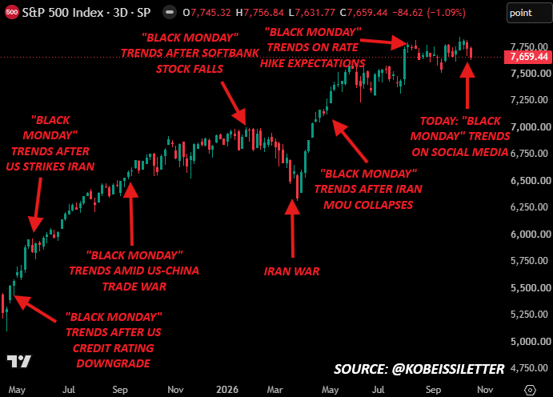
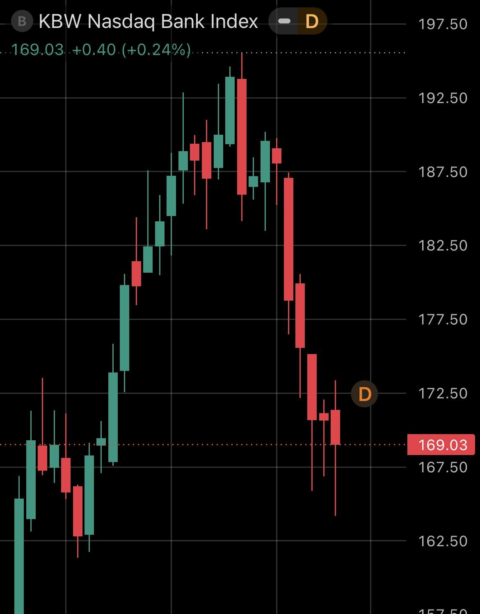
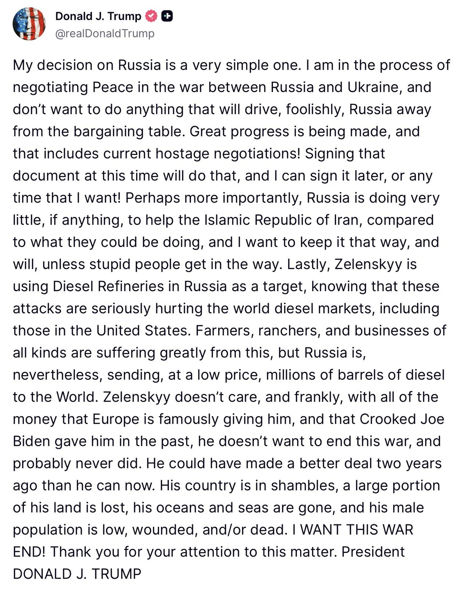
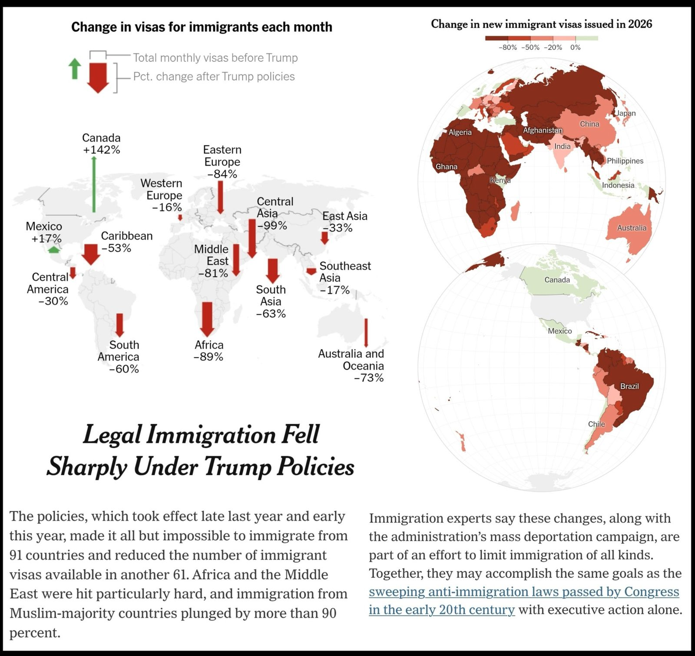
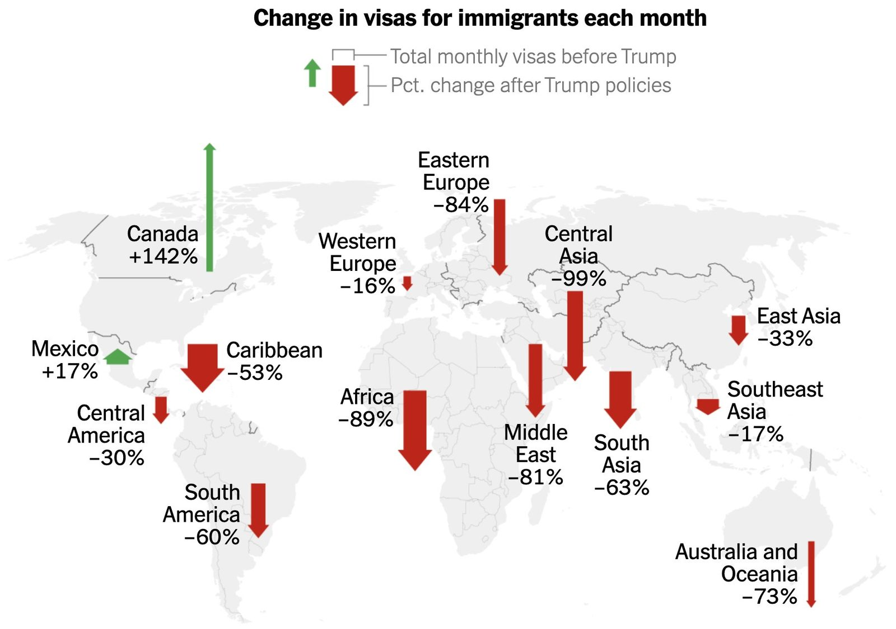
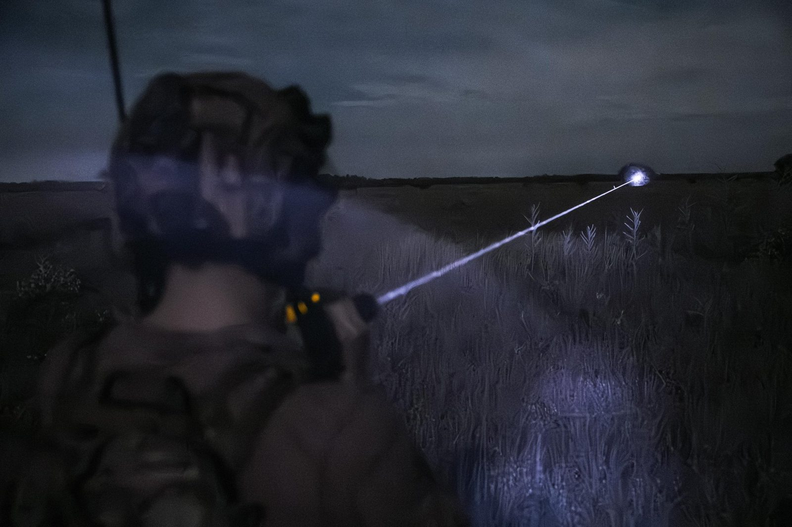
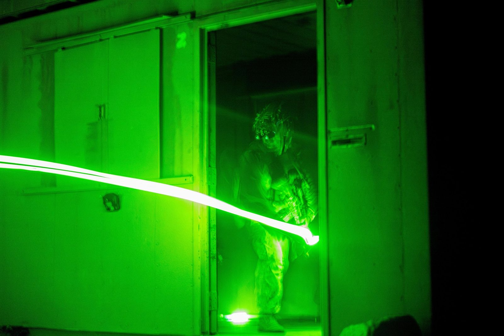
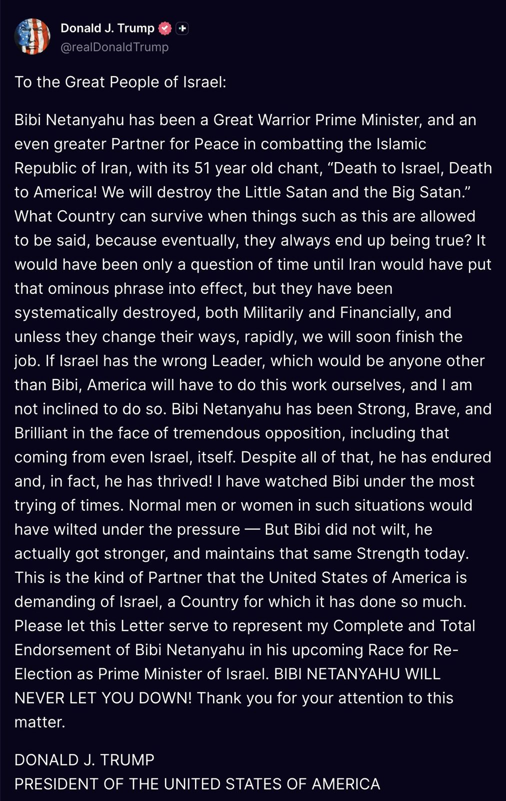

The historic Limoges town hall has just completely collapsed after far-left rioters set it on fire.
It was built in 1876. It survived World Wars. It did not survive modern France.
Well, this post struck a nerve.
Calls for a "Black Monday" stock market crash are trending again. Last night, we took the opposite view.
As with every market prediction we make, there are thousands of people urging others to "fade" us.
But take a look at the chart below. It shows every time "Black Monday" has trended on social media since May 2025.
History suggests that calls for a "Black Monday" crash have repeatedly presented some of the best buying opportunities.
And as we outline in our analysis below, the majority of stocks in the S&P 500 have already experienced a bear market, EVEN AS the index trades near record highs; a largely unprecedented occurence.
How is this possible? Read our full analysis here:

🚨Has the “Bankpocalypse” begun?
America’s biggest bank stocks are taking a beating, with reported declines from their highs ranging from 11% to 25%.
• JPMorgan: -11% • Bank of America: -19% • Citigroup: -15% • Wells Fargo: -18.5% • Goldman Sachs: -24% • Morgan Stanley: -19% • U.S. Bancorp: -15% • Capital One: -25% • PNC Financial: -16% • BNY Mellon: -14%
The KBW Nasdaq Bank Index, tracking 24 U.S. banking stocks, was recently reported down roughly 14% from its August peak, firmly in CORRECTION territory.
Goldman Sachs and Capital One’s reported declines exceed the 20% bear-market threshold.
Banks weakening while the broader market remains near highs deserves attention.

We’re committing a portion of Anthropic’s shares to the Anthropic Public Benefit Fund, a new wholly owned entity dedicated entirely to the public benefit.
It will start off with 5% of our shares. For every 50% increase in the company’s value over a set baseline, we can contribute up to an extra 2%, subject to our board’s discretion.
In total, this means that roughly 20% of Anthropic’s shares are committed to the public good. Our co-founders have already pledged to donate 80% of their equity, and around half our employees are donating a portion of their equity as part of a donation matching program we’ve run since our founding.
In the post below, we share more details about our new fund.
LATEST: 🇺🇸 Fed Chair Kevin Warsh called AI “probably the most consequential change to the US and the global economy in my lifetime.”
“I’m old. I’ve paid my home off,” said Ray Warner, a 72-year-old Akron resident. “Why would I pay property tax?”
Across the country, homeowners are asking the same question and revolting against property taxes at a scale not seen in a half century.
Calls for a "Black Monday" are spreading rapidly across social media right now.
If history is any guide, this means the S&P 500 should hit 8,000 soon.
Ignore the noise. Read our analysis below.
🚨 WOW! Sec. Scott Bessent came with receipts and MIC DROPPED Kristen Welker and Zelensky trying to paint Trump as a Putin flunky
"Zelensky does NOT criticize his European partners...the Europeans are FINANCING the Russian war machine. The U.S. imports $4 billion of Russian products, 1.8 billion of that is fertilizer. The Europeans, the import more than **10 TIMES** that!"
🔥🔥🔥
"The UK in May WAIVED their embargo on diesel and jet fuel made with RUSSIAN crude. Where's the OUTRAGE for the rest of the world?!"
Imagine thinking you know more than Bessent on issues like this.
Trump is allowing some sale of diesel to help lower American prices.
Europe has been buying Russian oil for MONTHS AND MONTHS despite Trump repeatedly asking them to stop
The EU is still the biggest buyer of Russian LNG on Earth, taking 49% of all Russia's exports.
BREAKING: Russia and the US are discussing building US data centers running on Russian nuclear power, per Putin's economic envoy Dmitriev.
"We are discussing joint projects in the field of Russia-USA data centers, including with the use of our nuclear power plants," Dmitriev says.
He says Putin and Trump are discussing a wide range of projects. "I think we will be announcing some important initiatives in the near future."
"We have previously said that there is a very large synergistic effect between Russia and the United States in the Arctic, in the LNG sector, and in other energy projects," Dmitriev adds.
BREAKING: Ukraine has launched a "massive aerial attack," consisting of over 1,000 drones, striking a major oil terminal in Russia.
The attack comes exactly 7 days after President Trump said Ukraine and Russia had agreed to an "energy ceasefire."
Following the announcement, Ukraine's President Zelensky quickly stated that he was unaware of such a ceasefire.
This comes after President Trump asked Ukraine several times to refrain from strikes on energy infrastructure due to surging US diesel prices, which are up over +80% since January.
Oil markets will reopen in 9 hours.
BREAKING: Trump administration proposes allowing Russia to sell large amounts of natural gas to Europe, offering Putin billions in revenue, with envoys Jared Kushner and Steve Witkoff arguing Ukraine should now consider restarting all pipelines that used to carry it, per the NYT.
The same envoys are weighing the release of up to $100 billion in frozen Russian sovereign assets as an upfront incentive for a limited ceasefire. European officials rejected that outright.
Assets, diesel sanctions, and now pipeline gas.

BREAKING: Russia’s President Putin has proposed a meeting with President Trump and President Xi to negotiate an end to the war with Ukraine, per WSJ.
The meeting is proposed for next month and was floated on an October 9th phone call with President Trump.
This was the same call that produced a deal for the US to buy Russian diesel.
JUST IN: 🇷🇺🇺🇸🇨🇳 Russian President Putin proposes summit with President Trump and Chinese President Xi Jinping to decide Ukraine's future.
JUST IN: 🇺🇸🇪🇺 US threatens "devastating" retaliation against European companies if EU restricts Elon Musk's Starlink.
BREAKING: Bell tower of Limoges' historic 143-year-old town hall collapses amid raging fires during riots in France.
“Close your Borders and take control, before it is too late!” - President DONALD J. TRUMP
NOW - Chaos at Place de la République in Paris, France.
▶ Watch on X‼️🇫🇷 𝗔𝗟𝗘𝗥𝗧𝗘 𝗜𝗡𝗙𝗢 — Situation HORS DE CONTRÔLE à Paris : les forces de l’ordre manquent de munitions et sont contraintes de RECULER face aux émeutiers
Des renforts sont demandés en URGENCE dans la capitale. La priorité est désormais de protéger l’Élysée et ses environs.
(Source : @AmauryBrelet)
BREAKING: The UK will deliver a speech to the British people asking them to be prepared for war and to make major sacrifices, per Army chief Roly Walker.
Every citizen will be asked to make sacrifices, Walker says.
The UK needs to "take the fight to the enemy," he says.
BREAKING: France erupts into chaos as up to 800,000 people take to the streets, with protesters setting fires, storming government buildings, & clashing with riot police.
ヨーロッパの没落は計画の失敗ではない。
それは計画である。
他の 主要な 民主主義国 は 次に 列に
もし社会が無制限に寛容であるならば、その寛容である能力は、最終的に不寛容な者たちによって奪われ、破壊されてしまう。
New from NYT: By executive action alone, the Trump administration has accomplised the largest cuts to legal immigration since the 1920s.
Muslim and African migration is down 90%. Visa issuance to Asia — including India and China — and Latin America has fallen across the board.

NYT: Legal Immigration Fell Sharply Under Trump Policies Adopted Early This Year 👍🏻



Army to return Confederate Memorial to Arlington National Cemetery.
BREAKING: Trump formally endorses Netanyahu, giving him his "complete and total endorsement."
He declares "we will soon finish the job," in Iran, and "If Israel has the wrong Leader, which would be anyone other than Bibi, America will have to do this work ourselves, and I am not inclined to do so."

JUST IN: Trump refuses to endorse Benjamin Netanyahu ahead of Israel's upcoming elections.
EXERCISE: On Sunday, October 18, 2026, we will have a routine training exercise on the grounds of the U.S. Capitol. Please do not be alarmed if you see emergency vehicles, low flying helicopters, and hear the simulated sound of gunfire.
The exercise is finished. Have a great day!
LATEST: 🏦 Circle CEO Jeremy Allaire says banks “are no longer in charge” of the payments landscape and “the innovators are having their day” as stablecoin adoption accelerates.
BREAKING: Egypt officially deploys troops to Saudi Arabia to fight Yemen's Houthis, with the National Defense Council approving it, and parliament holding an emergency session this afternoon, per MP Bakry.
It makes Egypt the largest Arab state to commit troops against the Houthis.
Egypt now enters a war against the force controlling Bab el-Mandeb, putting the Suez canal in play.
For four years, the Biden Administration failed to act while pandemic fraudsters made off with millions in stolen PPP and COVID EIDL loans.
Not only did this Administration put the guardrails back up; we’re partnering with @WHFraudTF to deliver justice to the criminals who abused programs meant for small businesses.